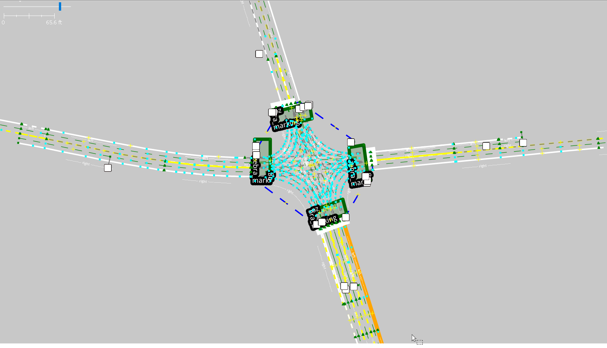
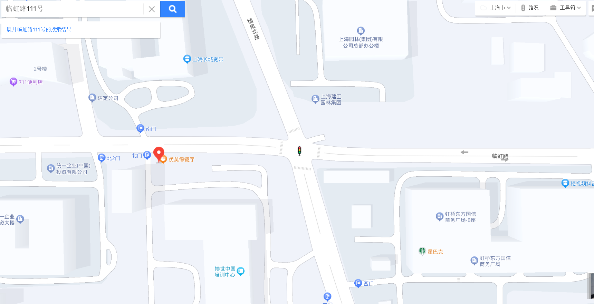
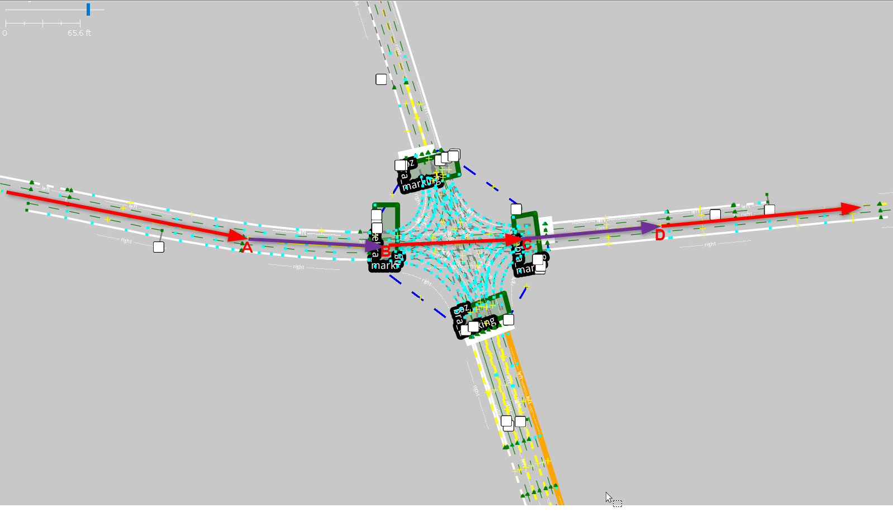
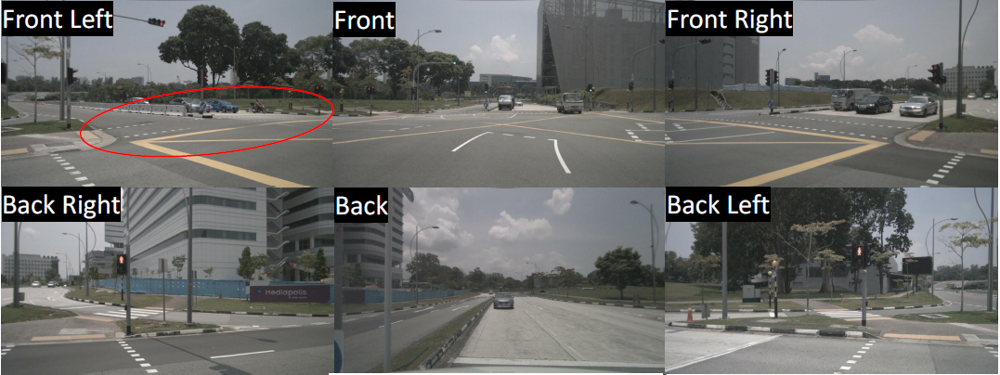
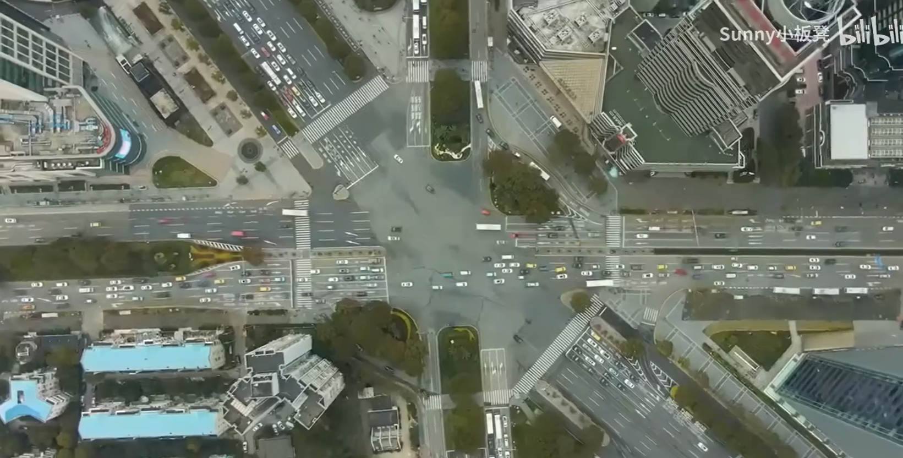

LiteMap AD arch
LOCAL MAPPING + SDMAP solution
Introduction
Local Mapping provides local detailed map information through local real -time maps
VIPER provides sensory information such as Lane Line, Road Edge, Road Marker
LOC provides POSE information
Local Mapping uses the SLAM solution to integrate multi -frame perception information to provide local quasi -high -precision road element information
Local Mapping cannot provide reliable topology information
SD MAP provides road -level navigation paths and topology information
Including road -level topology links, road reference paths and lane quantity information
Fusion
Outside the intersection, directly based on the result of the Local Mapping, Lane Center Line is generated, and the vehicle is driving along the Center Line
In the intersection, the lanes are the front and back of the intersection according to the topology links and reference paths provided by SDMAP.The virtual reference line in the intersection is adjusted according to the reference path of the SDMAP.
Scenario
highway E2E
parking E2E
urban L2
question
How to associate the lanes before and after the intersection?
Need Viper to provide enough FOV and Horizon
You can only handle simple intersections in the early stage
The width of the intersection is less than 50M
The alignment of lanes before and after the intersection is better
When crossing the intersection, self -car vision is less obstructed
Linhong Road-Fuquan North Road intersection
HD Map:

SD Map

The corresponding relationship of SDMAP on HDMAP
The curve ABCD in the figure is the Reference Path of SD Map

Perception
Element/category & attribute
Lane boundary
road marker
road edge
Free-space
traffic light
traffic sign
FOV
Best 360 -degree vision
At least 180 degrees ahead
horizon:
100 meters ahead
Left and right: 50M

